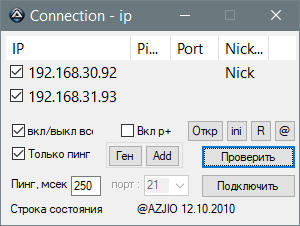

Connection
Назначение
Проверяет открытые порты 21, 8080 на указанных IP-адресах локальной сети с целью подключиться по FTP или просмотреть веб-сервер.

1. Список можно сгенерировать (Ген), проверить по списку, добавить (Add) онлайновые в список.
2. Списки можно открывать или кидать в окно утилиты, т.е. иметь несколько списков.
3. Сортировка по графе Ping позволяет сгруппировать онлайновые сервера.
4. Для ускорения проверки использовать "Только пинг". Проверка с учётом порта займёт много больше времени.